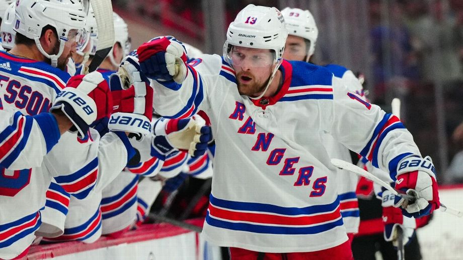

Bronny James medically cleared to play in NBA, sources say
In the aftermath of his cardiac arrest and a procedure to repair a congenital heart defect nine months ago,
USC's Bronny James has been medically cleared to be drafted by the NBA's Fitness to Play Panel, sources told ESPN.

Young NHL stars who are leveling up in Stanley Cup playoffs
The Stanley Cup playoffs are no place for the fresh-faced and inexperienced -- or so the conventional wisdom goes. Because one ill-timed mistake can often send a team spiraling toward elimination,
coaches tend to lean on players they can trust in big moments, which often correlates with being a veteran who has seen it all before and knows how to handle the pressure.
2024 NBA draft: Buzz, intel from inside the secret lottery room
That was a common sentiment in the private lottery drawing room, where about three dozen people give up their laptops and cell
phones and sequester themselves to watch the real lottery about an hour before the televised version.
How real are bad starts from Astros, Cardinals, Blue Jays?
As we reach the quarter mark of the 2024 MLB season, three teams -- all playoff contenders in recent years -- are off to miserable starts.